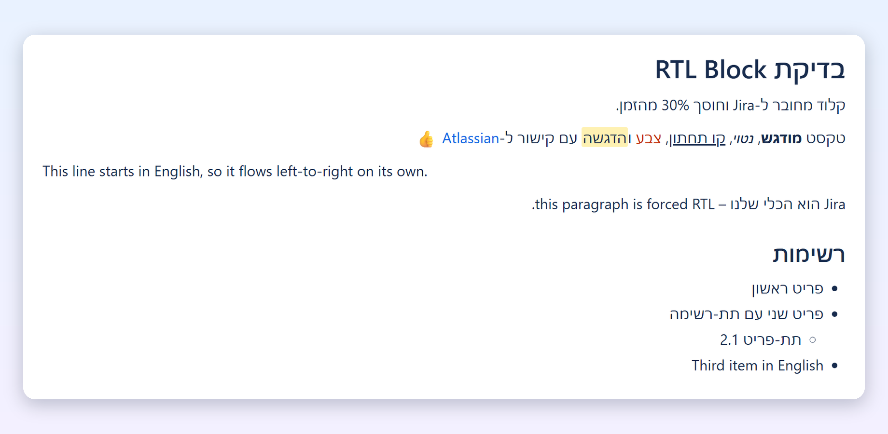

RNA RTL
Right-to-left Hebrew and Arabic for Confluence Cloud: bullets, numbers, checkboxes and table columns on the right, and punctuation where it belongs.
עברית מימין לשמאל ב-Confluence, כמו שצריך.

Getting started
- A site admin installs RNA RTL from the Atlassian Marketplace.
- In the Confluence editor, type /RTL and choose RTL Block.
- The full-screen RTL editor opens. Write your content and click Insert (or press Ctrl+S).
- To change it later, select the block on the page and click its edit (✎) button.
The toolbar
| Tool | What it does |
|---|---|
| ¶← / ¶→ | Force a paragraph right-to-left or left-to-right. Click again to return to automatic. Keyboard: Ctrl+Right Shift / Ctrl+Left Shift. |
| Align | Right, center or left. |
| Text style and size | Normal text or Heading 1 to 3. Font size (Small, Normal, Large, Extra large) applies to the whole paragraph. |
| Formatting | Bold, italic, underline, strikethrough, text color and highlight. |
| Lists | Bulleted, numbered and checklists. |
| Table | Insert a table; inside a table, add or remove rows and columns, toggle the header row, merge or split cells. |
| Link, image, emoji | Images are inserted from a public https:// address. |
Mixed Hebrew and English
Each paragraph takes its direction from its first letter, so an English paragraph flows left-to-right inside an RTL block while list bullets and table columns stay aligned. When a paragraph starts with an English word but is really Hebrew (for example "Jira מחובר לקונפלואנס"), force it with ¶←.
Where your content lives
Everything you write is saved inside the Confluence page itself, as part of the RTL Block. Confluence search indexes its text, page history tracks it, and RNA RTL has no servers or database of its own. See the privacy policy.
Exporting
PDF export keeps the right-to-left layout, but Confluence's PDF engine reverses the letters of Hebrew and Arabic words in all page content, a known Confluence limitation. RTL blocks are not yet included in Word export.
Subscription
If your site's subscription ends, every existing RTL block keeps displaying right-to-left for readers. Creating and editing RTL blocks resumes when a site admin renews the subscription.
Known limits
- Images attached through the regular Confluence editor appear as a placeholder inside an RTL block; insert images by URL instead.
- Checklist items are ticked in the RTL editor, not directly on the page.
- Panels, mentions, status lozenges and other macros added with the regular editor are kept as-is and shown as grey chips in the RTL editor.
Help
Questions, problems or feature requests: contact support. Support hours and response times are in the support SLA.